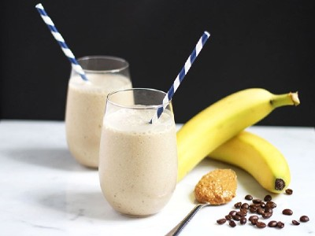

|  |
Smoothie name: Banana smoothie▸ Ingredients:
▸ Time to prepare: 10 minutes ▸ Approx quantity: 1 medium-size cup |
▸ How to make avocado smoothie:
- Buy bananas and milk and put them in the refrigerator for about 30 minutes.
- Then, peel the banana, cut it into small pieces, and put it in a blender to puree.
- Next, you pour fresh milk and small ice into the blender so that the two mixtures blend and smooth into each other.
- When the mixture thickens, add a little honey, stir well and enjoy.
▸ Calories and related information: